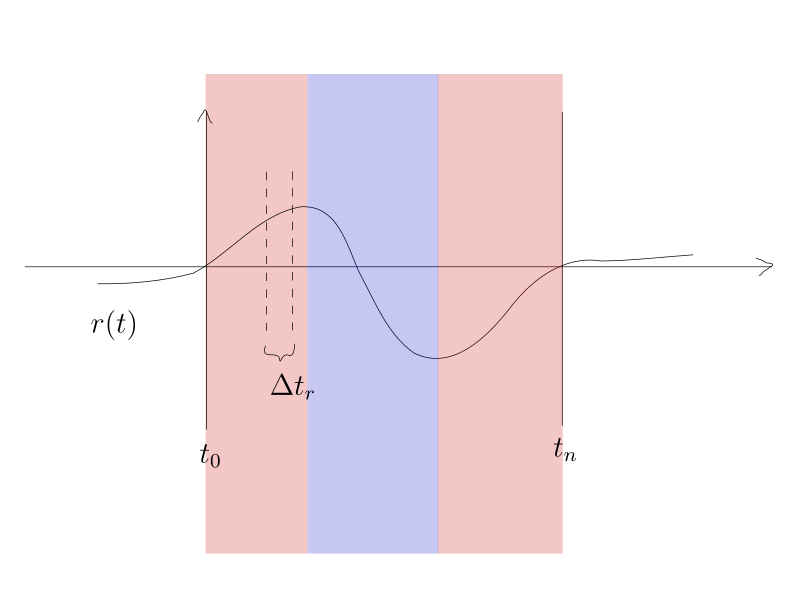
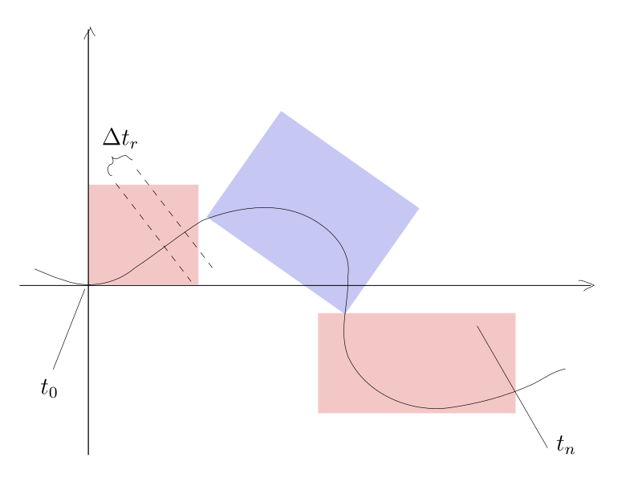
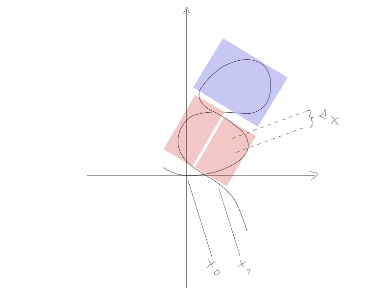
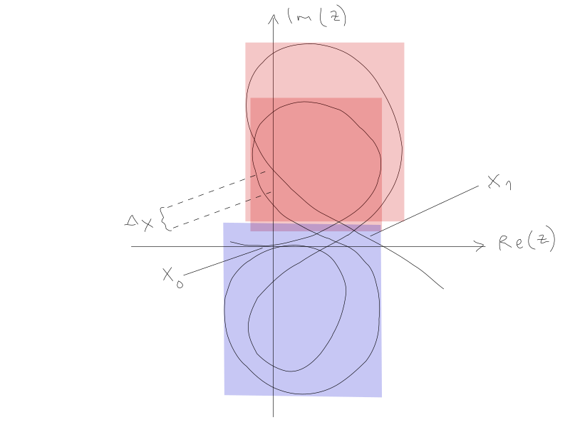

Grapher¶
Function Graph¶
Any time-based data set with an accurate sampling rate can be used to build a function f(x).
Vector Graph¶
This function graph can be converted into a sequence of vectors in a two-dimensional plane.
The construction of the graph can be seen here:

Definition of the ratio between opposite and adjacent of the right triangle:
Delta f(x) at point A / the average of all Delta f(x) of the Delta x’s between x0 and x1.
Condition: All Delta x are invariant.
By varying the step-size you can achieve:
And by making it even smaller you can get:
This last step reduces the impulse scaling to half the frequency found in the previous example. So for matchline overlay comparison the previous vector graph is preferred.